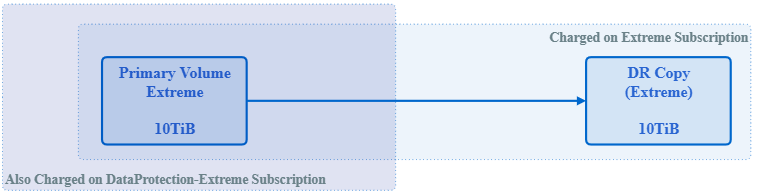

課金アカウント、サブスクリプション、サービス、およびパフォーマンス
寄稿者
サブスクリプションストレージサービスには課金アカウントが使用されます。各課金アカウントはテナントにリンクされます。請求アカウントには、 1 つ以上の月額プランを課金できます。
サブスクリプションとは、 1 つのパッケージとして登録および課金されるストレージサービスのグループのことです。サブスクリプション：
-
ストレージサービスが 1 つ以上あります
-
サブスクリプションの終了日が指定された期間です
-
サブスクリプションに関連付けられているアドオンを使用できます

|
複数のデータセンターにストレージが必要な場合は、データセンターごとに個別の契約が必要です。 |
ストレージサービスは、関連付けられたパフォーマンスレベルで、コミット済みストレージ容量にサブスクライブされます。NetApp Service Engine は、極端な階層化、プレミアム、プレミアム階層化、標準的なパフォーマンスレベルでファイルストレージとブロックストレージを提供し、オブジェクトのパフォーマンスサービスレベルでオブジェクトストレージを提供します。
階層化の卓越したパフォーマンスレベルとプレミアムなパフォーマンスレベルにより、コールドデータや非アクティブデータを監視して低コストのオブジェクトストレージ階層に階層化することで、ストレージの設置面積と関連コストを削減できます。階層化ポリシーは auto に設定されており、 31 日間非アクティブだったデータはデフォルトで階層化されています。この期間は 3 日から 61 日までの任意の日数に変更できます。
ファイルストレージ項目とブロックストレージ項目は、作成時にパフォーマンスレベルに関連付けられます。要件の変化に応じて、パフォーマンスサービスレベル間でワークロードを移動できます。卓越した階層化、プレミアム、プレミアム階層化、標準のパフォーマンスレベルは、さまざまなレベルの I/O パフォーマンス（ IOPS ）とスループット（ MBps ）を提供するため、ストレージを要件に合わせて調整できます。
バースト使用は、特定の時点までのサービスで許可されます。バースト使用は、（サブスクリプションで定義されているとおりに）別の料金で監視および課金されます。容量と使用状況の詳細については、を参照してください "コミット済み、消費済み、バースト時の容量、過剰な使用状況"。バックアップとディザスタリカバリをサポートする DP サービスも提供されています。
コミット済み、消費済み、バースト時の容量、過剰な使用状況
使用済み容量は、割り当て済みの容量です（ただし必ずしも使用されているとは限りません）。コミット済み容量とは、サブスクリプションでコミットされる容量のことです。加入者には、使用量に関係なく、コミット済み容量に対して一定のレートで課金されます。
バースト容量は、割り当てられたコミット済み容量を上回る容量です。
バースト時の容量 = 使用済み容量–コミット済み容量
NetApp Service Engine は、使用済み容量を監視し、使用状況をサブスクリプションに照らしてチェックし、サブスクリプションで指定されたバーストレートでコミット済み容量を超える使用済み容量を課金します。使用量は 5 分単位で取得され、 1 日ごとの要約が課金エンジンに送信されてバースト課金計算が行われます。（請求時間は、 NetApp Service Engine インストールの基盤となるインフラの現地時間に基づきます。)
|
|
スナップショット ' バックアップ ' 災害復旧レプリカなどの機能は ' プライマリ・ストレージに加えて ' 使用率の計算にも使用されます |
バースト使用の通知
バースト時の使用によって追加のコストが発生すると、 NetApp Service Engine GUI には次の情報が表示されます。
-
プロビジョニングに変更が提案された場合に、バースト容量が使用されることを通知します。
-
サブスクリプションがバースト使用に移行した場合の顧客管理者への通知。
-
容量レポートで、サービスに使用されているバースト時の使用日数と数量。詳細については、を参照してください "容量の使用状況"。
提案された変更によってバースト容量が使用される場合の通知
次の図原因は、プロビジョニングの変更提案によってサブスクリプションがバーストになる場合に表示される通知の例を示しています。サブスクリプションがバーストになることを確認して続行するか、アクションを続行しないことを選択できます。

次の表に、このようなバースト通知が表示されるタイミングを示します。
| アクション | ソースでの影響 | デスティネーションでの影響 |
|---|---|---|
共有 / ディスクを作成またはサイズ変更します。 |
ゾーンのサービスレベルに対するコミットメントを超えています。 |
該当なし |
共有 / ディスクを新しいサービスレベルに移動します。 |
ゾーンのサービスレベルに対するコミットメントを超えています。 |
該当なし |
ディザスタリカバリを有効にして、ファイルサーバ / ブロックストア上の共有 / ディスクの作成またはサイズ変更を行います。 |
|
デスティネーションの共有 / ディスクが自動的に作成されるため、デスティネーションゾーンのサービスレベルに対するコミットメントを超過しています。 |
ディザスタリカバリが有効になっているファイルサーバ / ブロックストアで、共有 / ディスクを新しいサービスレベルに移動します。 |
|
再配置されたデスティネーション共有 / ディスクによって、デスティネーションゾーンのサービスレベルに対するコミットメントを超過しています。 |
共有 / ディスクのバックアップを有効にします。 |
DP のコミットメントを超えています。 |
デスティネーションの共有 / ディスクが自動的に作成されるため、デスティネーションゾーンのサービスレベルに対するコミットメントを超過しています。 |
新しいオブジェクトストアテナンシーを作成します。 |
オブジェクトの容量に対するコミットメントを超える可能性があります。 |
該当なし |
オブジェクトストアのテナンシーのクォータを増やします |
オブジェクトの容量に対するコミットメントを超える可能性があります。 |
該当なし |
サブスクリプションがバースト状態になったときの通知
サブスクリプションがバースト状態の場合は、次の通知バナーが表示されます。この通知は、テナンシーに関するお客様管理者に表示され、確認が完了するまで表示されます。

データ保護
DP は、データのバックアップをサポートする方法、および必要に応じてデータをリカバリする方法です。
NetApp Service Engine DP には次の機能があります。
-
ディスクと共有のスナップショット
-
ディスクおよび共有のバックアップ（サブスクリプションに DP サービスが含まれている必要があります）
-
ディスクおよび共有のディザスタリカバリ（サブスクリプションには DP または DP Advanced サービスが必要）
Snapshot
Snapshot は、データのポイントインタイムコピーです。Snapshot をクローニングして新しいディスクを作成したり、同じ機能や類似の機能を使用して共有したりできます。
Snapshot は、アドホックで作成することも、 Snapshot ポリシーの定義に従ってスケジュールに自動的に作成することもできます。Snapshot ポリシーは、 Snapshot をキャプチャするタイミングと保持する期間を決定します。
|
|
Snapshot は、サービスの消費容量を表します。 |
バックアップ
バックアップとは、項目のコピーを作成してレプリケートし、元のゾーンとは別のゾーンにコピーを格納することを意味します。このゾーンでは各プロトコルが有効になっており（ブロックストレージの場合のみ）、 MetroCluster 以外は有効になっています。NetApp Service Engine では、ファイルおよびブロックストレージでバックアップを実行できます（サブスクリプションには DP サービスが必要）。共有 / ディスクのバックアップは、サブスクリプションで最も低コストのパフォーマンス階層（ Standard ）にあるバックアップゾーンに保存されます。
バックアップは、新しい共有 / ディスクの作成時に設定するか、またはあとで既存の共有 / ディスクに追加できます。
-
注： *
-
バックアップは 0 ： 00 UTC 前後の固定時間に実行されます。
-
バックアップは、共有 / ディスクに対して設定されたバックアップポリシーに従って実行されます。バックアップポリシーによって、次のことが決まります。
-
バックアップが有効になっている
-
バックアップがレプリケートされるゾーン。バックアップゾーンは、元の共有またはディスクが存在するゾーン以外の NetApp Service Engine 内の任意のゾーンで、それぞれのプロトコルが有効になっており（ブロックストレージのみの場合）、 MetroCluster が有効になっていません。一度設定すると、バックアップゾーンを変更できません。
-
各間隔（日単位、週単位、または月単位）の保持（保持）するバックアップの数。
スケジュールされたバックアップは定期的に作成され、削除できませんが、保持ポリシーに基づいて古いバックアップが作成されます。
-
-
バックアップのレプリケーションは毎日実行されます。
-
ディスクまたは共有のバックアップを、ゾーンが 1 つだけの NetApp Service Engine インスタンスで設定することはできません。
-
プライマリ共有またはディスクを削除すると、関連付けられているすべてのバックアップが削除されます。
-
バックアップは合計消費容量に影響します。また、 DP サブスクリプションレートでバックアップにかかるコストも発生します。も参照してください "データ保護、使用容量、料金"。
-
バックアップからのリストア：バックアップから共有またはディスクをリストアするサービス要求を生成します。
ディザスタリカバリ
ディザスタリカバリとは、災害発生時に通常運用時にリカバリする機能のことです。
NetApp Service Engine は、非同期と同期の 2 種類のディザスタリカバリをサポートしています。
|
|
ディザスタリカバリをサポートするかどうかは、 NetApp Service Engine インスタンスでサポートされているインフラによって決まります。 |
ディザスタリカバリ：非同期
NetApp Service Engine は、次の機能を提供することで非同期ディザスタリカバリをサポートします。
-
プライマリボリュームをディザスタリカバリゾーンに非同期でレプリケートします
-
フェイルオーバー / フェイルバック（サービス要求でのみ使用可能）
非同期ディザスタリカバリは、ファイルストレージおよびブロックストレージで使用でき、サブスクリプションには DP サービスが必要です。
ディザスタリカバリゾーンは、プライマリボリュームが作成されるゾーンとは異なる NetApp Service Engine 内のゾーンにする必要があります。ソースゾーンが MetroCluster に対応している場合、 MetroCluster パートナーにはなりません。共有 / ディスクのディザスタリカバリレプリカは、元の共有 / ディスクと同じパフォーマンス階層にあるディザスタリカバリゾーンに格納されます。
プライマリボリュームの非同期ディザスタリカバリレプリケーションを有効にするには、次のものが必要です。
-
ディザスタリカバリをサポートするための、ボリュームが配置されているファイルサーバまたはブロックストアの設定
-
ファイル共有またはディスクのディザスタリカバリレプリケーションを有効または無効にします。ディザスタリカバリが設定されている場合、デフォルトでは、共有とディスクのディザスタリカバリレプリケーションが有効になります。
非同期のディザスタリカバリをサポートするようにファイルサーバまたはブロックストアを設定します
ファイルサーバまたはブロックストアの作成時またはあとから、非同期のディザスタリカバリを有効にします。有効にしたディザスタリカバリを無効にすることはできず、ディザスタリカバリゾーンを変更することはできません。ディザスタリカバリスケジュールは、ディザスタリカバリロケーション（毎時、毎時 4 回、または毎日）にデータをレプリケートする頻度を指定します。
ファイル共有またはディスクで非同期のディザスタリカバリを有効にします
非同期のディザスタリカバリレプリケーションを設定できるのは、親ファイルサーバまたはブロックストアが最初に非同期のディザスタリカバリ用に設定されている場合のみです。デフォルトでは、親でレプリケーションが有効になっている場合、親ホストとなるファイル共有またはディスクでレプリケーションが有効になります。特定の共有またはディスクのレプリケーションを除外するには、その共有 / ディスクのディザスタリカバリを無効にします。これらの共有 / ディスクでレプリケーションを有効または無効に切り替えることができます。
-
注： *
-
プライマリファイルサーバまたはブロックストアを削除すると、ディザスタリカバリ用にレプリケートされたコピーがすべて削除されます。
-
ディザスタリカバリゾーンは、ファイルサーバまたはブロックストアごとに 1 つだけ設定できます。
-
ディザスタリカバリコピーは、使用済み容量の合計につながります。また、ディザスタリカバリのサブスクリプション料金も発生します。も参照してください "データ保護、使用容量、料金"。
ディザスタリカバリ—同期
MetroCluster は、別々の場所または障害ドメインにある 2 つの異なるゾーン間でデータと設定を同期的にレプリケートする DP 機能です。一方のサイトで災害が発生したときは、管理者がサバイバーサイトからデータを提供できます。
MetroCluster で構成された NetApp Service Engine で管理されるサイトは、次の方法でファイルストレージおよびブロックストレージの同期ディザスタリカバリをサポートできます。
-
同期ディザスタリカバリをサポートするようにゾーンを設定できます。
-
これらのゾーンで作成されたディスクまたは共有は、ディザスタリカバリゾーンに同期的にレプリケートされます。
-
注： *
-
同期ディザスタリカバリは、同期ディザスタリカバリサブスクリプション料金で発生します。も参照してください "データ保護、使用容量、料金"。
データ保護、使用済み容量、および料金
このセクションの図は、 DP 料金の計算方法を示しています。
ディザスタリカバリ
非同期のディザスタリカバリ
非同期ディザスタリカバリでは、使用量とコストは次の料金で構成されます。
-
元のボリューム容量は、配置されているパフォーマンス階層で課金されます。
-
ディザスタリカバリコピーは、デスティネーションまたはディザスタリカバリゾーンの同じパフォーマンス階層で課金されます（ディザスタリカバリコピーは同じ階層に格納されます）。
-
DP サービスの料金（元のボリュームの容量に対する料金）。

同期ディザスタリカバリ
同期ディザスタリカバリでは、使用量とコストは次の料金で構成されます。

バックアップ
バックアップでは、使用量とコストは次の料金で構成されています。
-
元のボリューム容量は、配置されているパフォーマンス階層で課金されます。
-
バックアップボリュームは、使用可能な最も低いパフォーマンス階層で課金されます（バックアップコピーは、使用可能な最も低コストの階層に格納されます）。
-
DP サービスの料金（元のボリュームの容量に対する料金）。

 ドキュメントの変更をリクエスト
ドキュメントの変更をリクエスト GitHub で編集
GitHub で編集 寄稿者向けガイド
寄稿者向けガイド